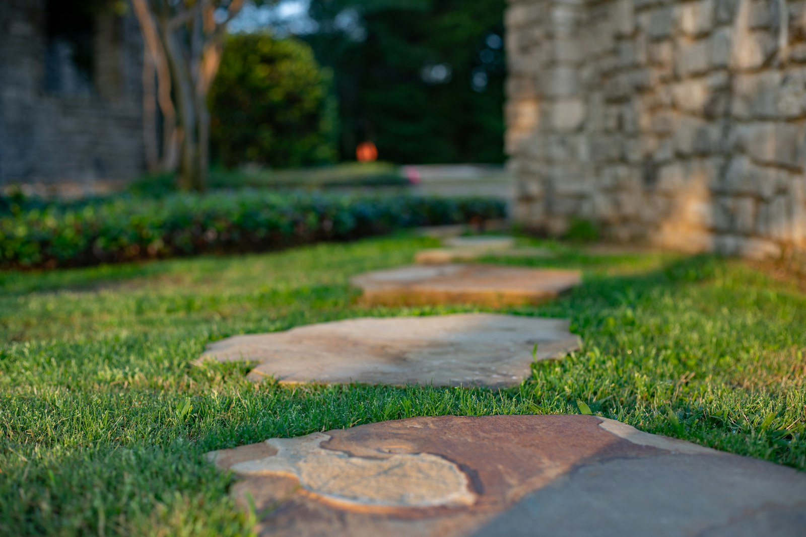
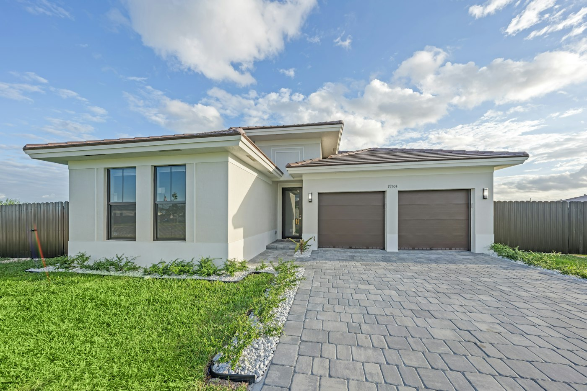
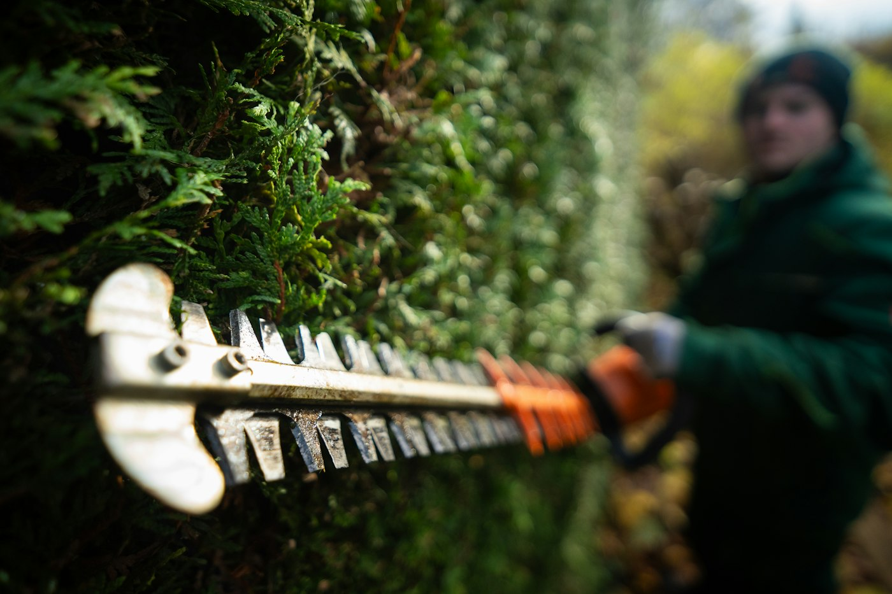
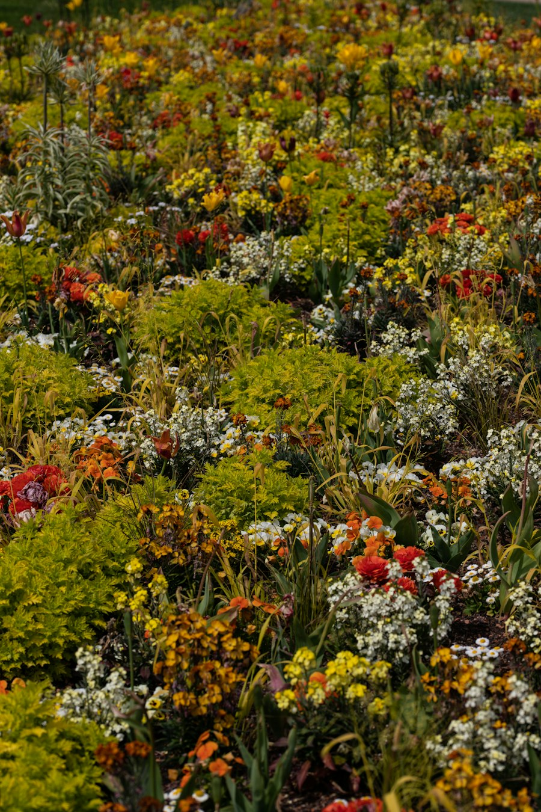

Beispielbild
Garten neu anlegen
Bepflanzung, Wege und Ruheplätze zu einem Garten zusammengestellt, der zu Ihnen passt.
Die Gärtnerei Laber gestaltet und pflegt Gärten, pflastert Einfahrten und kümmert sich als Friedhofsgärtnerei um die Grabpflege, auf Wunsch über viele Jahre. Wählen Sie, worum es Ihnen geht:

BeispielbildAllerheiligen ist am 1. November, Totensonntag am 22. November. Gestecke und die Herbstbepflanzung jetzt rechtzeitig bestellen.
Gesteck anfragen →Ein Gärtnerjahr hat vier Zeiten, und in jeder gibt es im Garten und am Grab etwas anderes zu tun. Tippen Sie auf eine Jahreszeit.
Planung, solide Ausführung und regelmäßige Pflege aus einer Hand: für neue Gärten, Terrassen, Wege und Einfahrten.
Bepflanzung, Wege und Ruheplätze zu einem Garten zusammengestellt, der zu Ihnen passt.

BeispielbildHofeinfahrt, Garagenzufahrt, Terrasse und Wege, mit tragfähigem Unterbau.

BeispielbildFormschnitt, Baum- und Strauchschnitt zur richtigen Zeit im Jahr.
Boden vorbereiten, Rollrasen verlegen und anwalzen: Die Fläche ist sofort grün.

BeispielbildBlumenbeete, Hecken, Kübelpflanzen für Terrasse und Eingang.
Rasenschnitt, Bewässerung, Hecke und Laub: regelmäßig, ohne dass Sie daran denken müssen. Die Arbeitskosten setzen Sie zum Teil von der Steuer ab.
Pflege anfragen„Auch für sehr kleine Gärten finden unsere Landschaftsgärtner eine gute Lösung.“Gärtnerei Laber
Die Grabstätte bleibt gepflegt und frei von Gras, Moos und Unkraut. Die Bepflanzung wechselt mit den Jahreszeiten, zu Gedenktagen kommt ein Gesteck aus Blumen, Zweigen und Früchten der Saison.
Nach der Beisetzung oder vor einem Gedenktag: Grab abräumen, neu bepflanzen, Gesteck setzen.
Regelmäßige Pflege und Wechselbepflanzung im Frühjahr, Sommer und Herbst, im Winter Abdeckung mit Tannengrün.
Besonders würdevoll zu Allerheiligen und Totensonntag, auf Wunsch auch zum Jahrestag oder zu Weihnachten.
Einmal geregelt, über viele Jahre gepflegt. Mehr dazu direkt hier unten.
Für alle, die die Pflege eines Grabes verlässlich regeln möchten, für sich selbst oder für Angehörige. Sie legen Umfang und Laufzeit fest, wir pflegen, und eine unabhängige Treuhandstelle wacht über Geld und Arbeit.
Nur eine Telefonnummer oder E-Mail-Adresse ist nötig, alles andere ist freiwillig und hilft beim Angebot.
In der fertigen Seite ginge sie jetzt direkt per E-Mail an die Gärtnerei Laber, und Sie bekämen eine Bestätigung. Im Entwurf wird nichts versendet.
Richtwerte, damit Sie wissen, womit Sie rechnen können. Ihr Angebot richtet sich nach Ihrem Garten oder Grab.
Für ein Einzelgrab mit Wechselbepflanzung im Frühjahr, Sommer und Herbst liegt eine Jahrespflege meist zwischen etwa 200 und 500 Euro. Füllen Sie das Formular aus, und Sie erhalten ein Angebot.
Sehr sicher. Die Gesellschaft für Dauergrabpflege Westfalen-Lippe prüft und registriert jeden Vertrag, verwaltet das Geld treuhänderisch und kontrolliert die Pflege regelmäßig. Die Gärtnerei Laber ist dort Vertragsbetrieb.
Für ein Einzelgrab über 20 Jahre meist mit etwa 4.500 bis 8.000 Euro, für ein Urnengrab ab rund 2.500 Euro. Die Laufzeit bestimmen Sie selbst, empfohlen sind mindestens fünf Jahre. Wir beraten Sie gern, auch telefonisch.
Ja. 20 Prozent der Arbeitskosten ziehen Sie direkt von der Einkommensteuer ab: bei regelmäßiger Gartenpflege bis zu 4.000 Euro im Jahr, bei Handwerkerleistungen wie Pflasterarbeiten bis zu 1.200 Euro (§ 35a EStG). Sie brauchen nur die Rechnung und zahlen per Überweisung.
Mit Betonpflaster einschließlich Unterbau meist etwa 100 bis 140 Euro pro Quadratmeter, mit Naturstein etwa 180 bis 240 Euro. Füllen Sie das Formular aus, und Sie erhalten ein Angebot für Ihre Fläche.
Fertig verlegt kostet Rollrasen meist 15 bis 25 Euro pro Quadratmeter. Dafür ist die Fläche vom ersten Tag an grün und dicht, ohne monatelanges Warten auf die Saat.
Richtwerte aus Preisübersichten von Friedhofsgärtnereien, Verbraucher- und Ratgeberseiten sowie § 35a EStG, Stand Oktober 2026.
Ein Betrieb mit zwei Aufgaben: Gärten anlegen und pflegen, und Gräber so pflegen, dass Angehörige sich darauf verlassen können.
Für den Garten wie für die Grabpflege: ein kurzer Anruf genügt, wir besprechen den Rest.